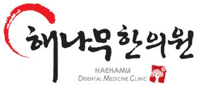
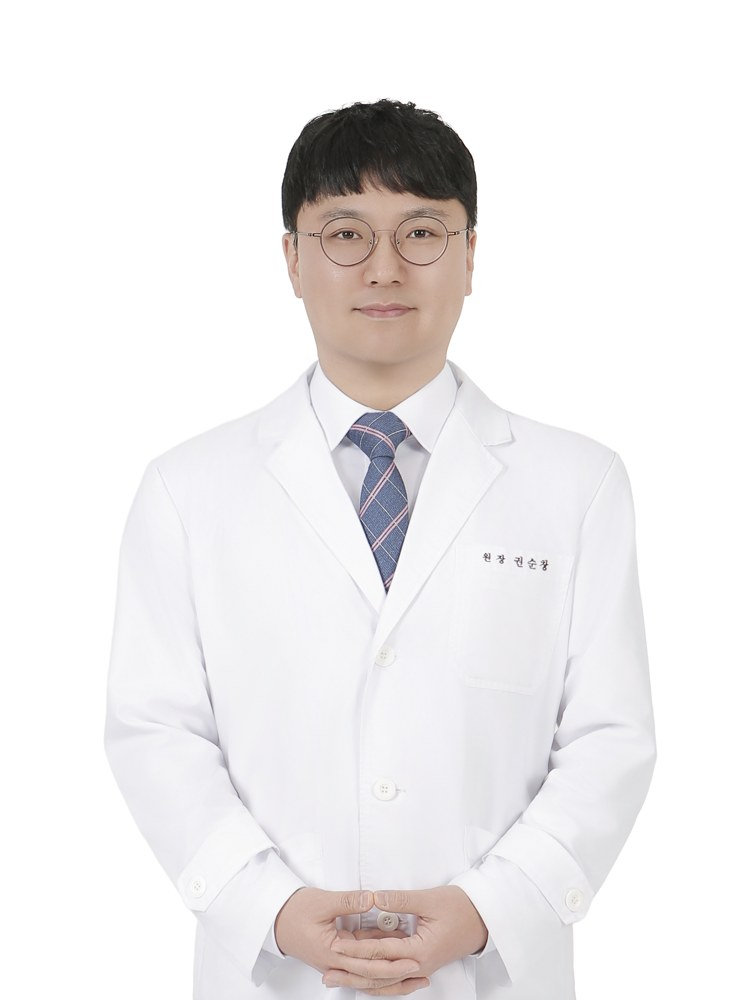
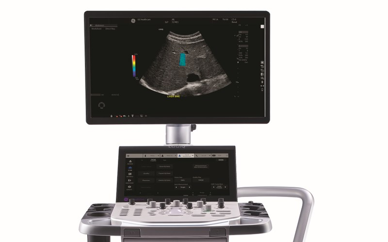
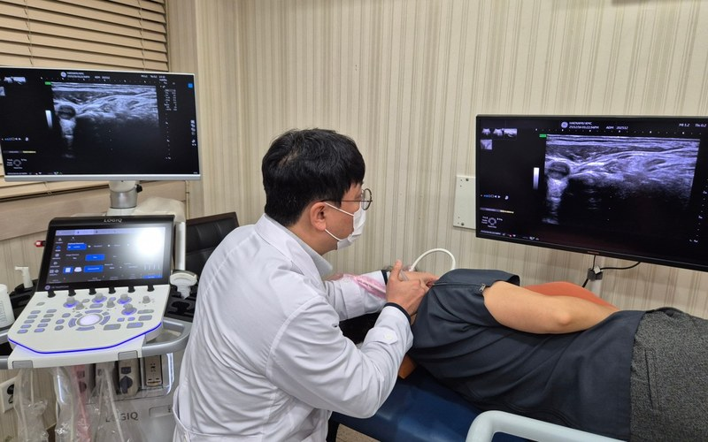
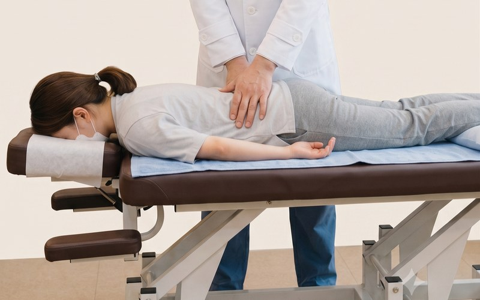
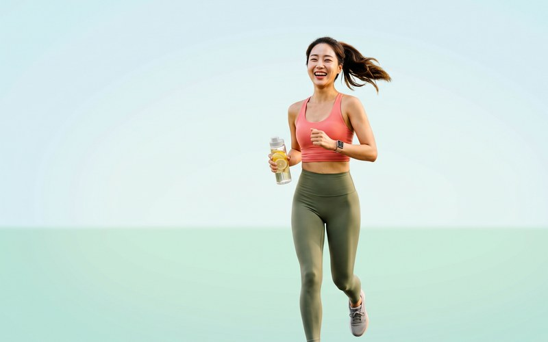

시흥 해나무한의원시흥 포동에서
정확한 진단과 진심 어린 치료를 약속합니다.
토요일 09:30 - 13:00 진료, 일요일·공휴일 휴진
안녕하세요. 해나무한의원 대표원장 권순창입니다. 시흥시 포동에서 정확한 진단과 진심 어린 치료로 환자분의 몸과 마음이 함께 회복될 수 있도록 돕고 있습니다.
원인을 세밀하게 파악하고 체질과 생활습관을 고려한 진료를 진행합니다. 환자 한 분 한 분에게 충분한 시간을 들입니다.
대학병원급 초음파 진단장비로 근육, 신경, 관절의 상태를 세심하게 살핀 뒤 치료 계획을 세웁니다.
식약처 인증 우수 한약재(GMP)만 사용하며, 대표원장이 직접 정성을 담아 달입니다.
포동의 따뜻한 한의원, 해나무처럼 변함없이 환자 곁을 지키겠습니다.

"세심한 진단과 따뜻한 진료로 환자분의 지친 몸과 마음을 치유합니다. 오직 한 분 한 분의 체질에 맞춘 정교한 치료를 약속드립니다."
해나무한의원은 환자분의 상태와 체질을 세심히 살피고, 다양한 분야의 한방 진료를 맞춤형으로 제공합니다.
교통사고 후 발생하는 신체적, 정신적 문제를 추나요법으로 치료합니다.
디스크, 협착증, 일자목, 거북목, 좌골신경통, 이상근증후군 같은 목과 허리 질환을 치료합니다.
회전근개손상, 석회성건염, 충돌증후군, 오십견 등 어깨 질환을 치료합니다.
퇴행성관절염, 연골 손상 등 무릎 질환을 치료합니다.
건초염, 방아쇠손가락, 손목터널증후군, 손목삐끗 을 치료합니다.
발목삐끗, 족저근막염, 아킬레스건염, 비복근파열(테니스레그) 등을 치료합니다.
생리통, 생리불순, 산후풍, 갱년기 증상, 난임 관련 체질을 관리합니다.
기능성 소화불량, 만성 위염, 역류성 식도염 등 각종 소화기관 증상을 치료합니다.
경추성두통, 신경성두통 및 어지럼증과 이명 문제를 치료합니다.
맥진과 설진을 통하여 환자의 체질을 고려한 최적의 맞춤형 녹용 보약을 처방합니다.
황제에게 진상되었던 최고의 보약으로, 유명인들도 가장 많이 찾는 공진단을 처방합니다.
굶지 않는 방법으로 미용이 아닌 건강함을 만들겠습니다.
대학병원급 고해상도 초음파진단 장비 TOTUS를 도입하여 정확한 원인파악과 안전하고 정밀한 시술을 시행합니다.

순수 한약재에서 추출하고 정제한 성분을 경혈에 직접 주입하여, 침의 효과와 한약의 효과를 동시에 얻을 수 있습니다.
만성적인 통증부터 급성 통증까지, 초음파를 통해 정확한 부위를 확인하여 치료하므로 안전하고 빠른 통증 완화 효과를 자랑합니다.
자세히 보기
척추와 골반의 틀어짐을 확인후, 손을 이용하여 틀어진 척추와 관절, 뭉친 근육을 밀고 당겨 바르게 교정합니다.
거북목, 수험생 통증, 골반 틀어짐 등으로 인한 구조적 원인을 해결하여 만성 통증의 재발을 방지합니다.

좋아진 부위가 쉽게 재발되는 이유는 바로 면역력 저하 입니다. 감기가 재발하듯 , 통증도 재발하기가 쉽습니다. 원장님의 세밀한 진맥과 설진을 바탕으로 오직 환자 한 분만을 위한 약을 처방합니다.
식약처(KFDA)의 엄격한 품질 검사를 통과한 청정 한약재만을 고집하여 남녀노소 누구나 안심하고 복용하실 수 있습니다.
식이조절과 한약을 통해, 요요 없는 건강한 감량을 시작하세요.

일요일과 공휴일은 휴진합니다
| 구분 | 진료 시간 | 점심 시간 |
|---|---|---|
| 평일 (월~금) | 09:30 - 19:00 | 13:00 - 14:00 |
| 토요일 | 09:30 - 13:00 | 점심시간 없이 진료 |
| 일요일 및 공휴일 | 휴진 | - |
내원하시는 모든 환자분들께 치료시간만큼 무료 주차를 지원해 드립니다. 진료를 마치시고 데스크에 차량 번호를 말씀해 주세요.
대중교통 이용 시 자세한 안내는 전화로 문의해 주세요.